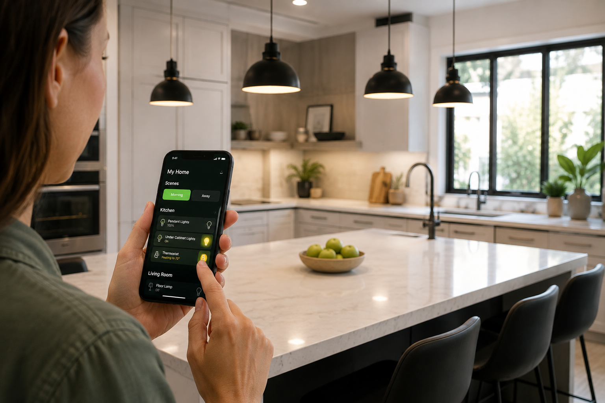
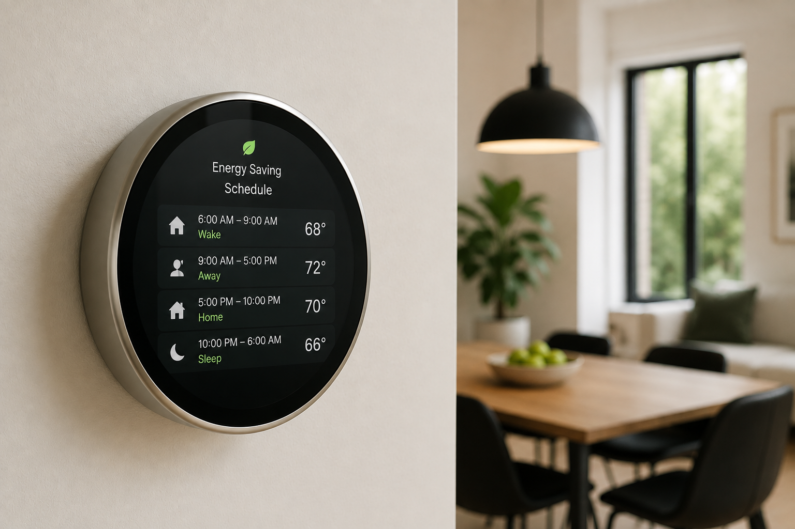
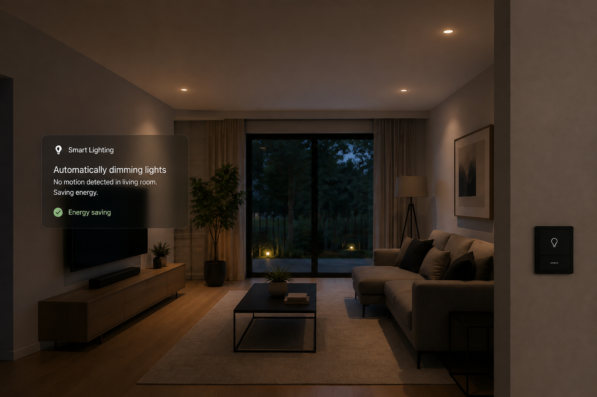
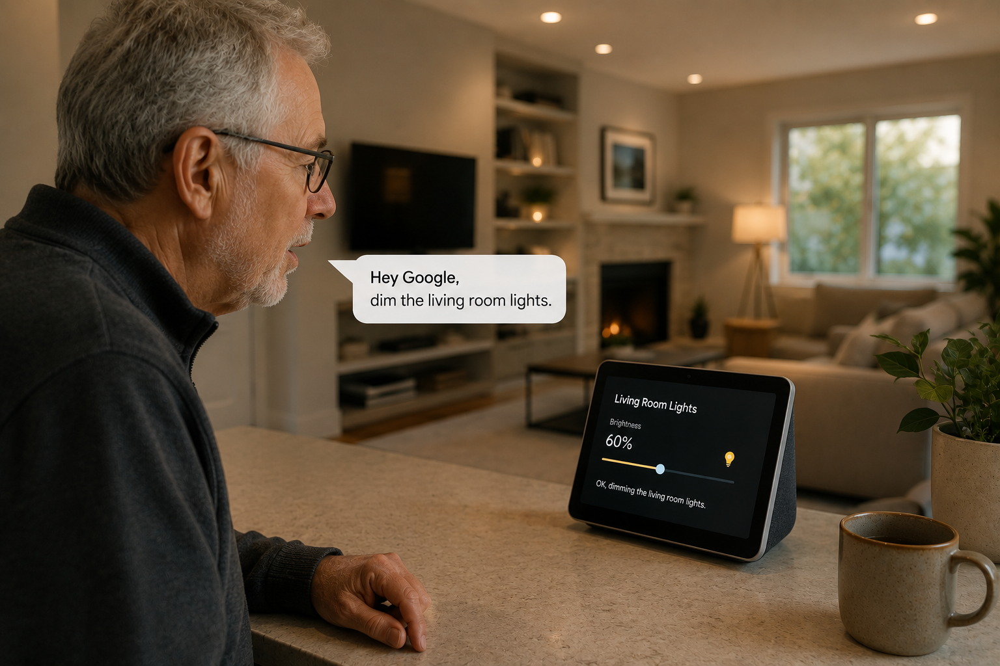

Smart home technology has quietly moved from novelty to normal.
Industry researchers estimate the global smart home market is on track to roughly double in size over the next few years, as more of what used to be "extra" — thermostats, locks, cameras, lighting — becomes standard in new and renovated homes alike (see Grand View Research's market analysis). Behind that growth is a simpler story: a handful of specific, everyday problems that this technology is genuinely good at solving.

Smarter mornings, smaller decisions
The most immediate change is the smallest one: fewer tiny decisions to make every day. Lights that adjust with sunrise, a thermostat that already knows your schedule, coffee that starts before you're fully awake — none of it is dramatic on its own, but it adds up to noticeably less mental overhead in the parts of the day when you have the least energy to spend on it.
This is also where most people's smart home journey actually starts — not with an ambitious whole-house system, but with one small routine that removes one small annoyance.
Lower bills, without watching for it
Energy costs are one of the clearer, more measurable benefits. Smart thermostats that learn your schedule and adjust automatically have been shown to meaningfully cut heating and cooling costs compared to a fixed setting — savings that show up on the bill without you having to think about it month to month.


Smart plugs and lighting add a second layer of savings by cutting the "phantom load" of devices left running or plugged in unnecessarily — a smaller effect individually, but one that compounds across a whole house of devices.
A home that watches out for you
Security is where the emotional impact tends to be highest. A camera that sends an alert the moment someone's at the door, a lock you can check remotely instead of wondering if you locked it, a sensor that catches a water leak before it becomes a flooded floor — these aren't dramatic features, but they remove a specific, nagging kind of worry that used to just be background noise in daily life.
- Remote visibility: checking in on your home from anywhere, instead of just hoping everything's fine.
- Faster response: real-time alerts instead of finding out after the fact.
- Fewer false alarms: modern sensors are better at telling a pet from an intruder than older systems ever were.
The biggest shift isn't more gadgets — it's fewer moments of "wait, did I remember to..."
Independent living, made easier
One of the most meaningful, least-talked-about changes is happening around aging in place and accessibility. Voice-controlled lighting and thermostats remove the need to reach switches or dials. Fall-detection sensors and automatic check-in routines give adult children real peace of mind about aging parents living alone. Video doorbells let someone verify who's at the door without having to get up at all.
This isn't a future use case — it's already one of the fastest-growing reasons people adopt their first smart home device, often chosen by a family member rather than the person who ends up using it day to day.

Smart home technology for apartments and renters
You don't need to own a house — or drill a single hole — to get most of these benefits. Plug-in smart plugs, battery-powered locks that fit over an existing deadbolt, and Wi-Fi cameras that mount with adhesive strips are all designed specifically to be removable, making them realistic options for renters.
- Start with a smart plug: no installation, works with lamps, fans, and small appliances.
- Add a battery-powered lock cover: keeps your landlord's original hardware intact underneath.
- Use portable cameras: repositionable and fully removable when you move out.
The house of technology: what's coming next
The future of smart homes looks less like "more screens" and more like devices that quietly coordinate with each other without you managing each one individually. Cross-brand standards like Matter (which we've covered in more detail here) are pushing toward a home where your lights, locks, and thermostat all speak the same language, regardless of which company made them.
Smart homes of the future are also trending toward prediction rather than just reaction — systems that notice patterns (you're usually home by 6, you usually lower the heat before bed) and quietly adjust ahead of time, rather than waiting to be told.
Getting started without overwhelming yourself
The mistake most beginners make is trying to automate everything at once. A better approach: pick the one annoyance that bothers you most — a light you always forget to turn off, a lock you're never sure about, a thermostat you keep meaning to adjust — and solve just that one thing first.
If you're deciding where to start, our guide on the Matter smart home standard is worth a read first — it affects which devices will actually work well together, no matter which one you buy.